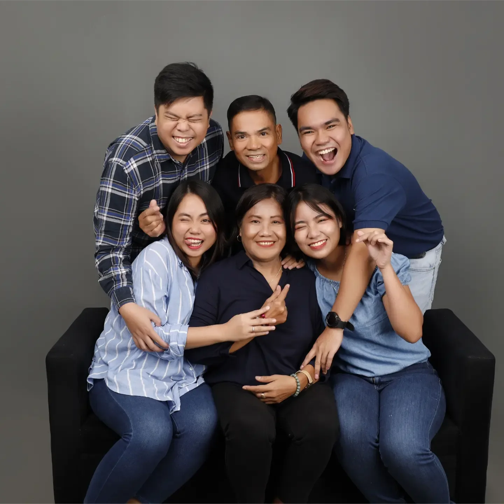

02 / The heart
The people.
The paws. The purpose.
The things I care about don’t all come with a title. Family, a handful of good friends, six dogs, and moments of giving back — this is the personal side of me.


My family
My people.
My home.
I love my family. Whatever I’m working on, wherever I travel, they are a big part of who I am.
There are many chapters to my story. This is one I always come back to.
01 / The four-legged family
Six dogs.
A very full house.
I have five Aspins — one family — and one Corgi. They have their own permanent corner of my heart.
5Aspins · one family
1Corgi
6Dogs to love


02 / Good company
A handful of friends.
A lifetime of stories.
From different walks and chapters of my life. A small circle can still hold a very big world.


03 / Giving back
Showing up matters.
A few moments from community activities: sharing time, working alongside others, and being part of something beyond myself.


04 / Leadership & service
Serving the People
- 2026
Diversity & Inclusion MNL Member
- 2024 – Present
Association for Computing Machinery Paper Reviewer
- 2026
Digital Scholar Alumni Council Communications Member
- 2024
Summer Camp Data Science Lead – Rice University
- 2022 – 2023
XYZ Global Communications Member
- 2022
XYZ PH Communications Member
- 2021
XYZ PH Ingenuity Member
- 2020
UP ACM Chairperson
- 2019
UP ACM Public Relations Head
- 2013 – 2014
PLM JPCS President
- 2014 – 2019
Organized multiple organizations and conferences in Computing and IT
A story still being written
“From Riles to Riches.”
Not rich… yet.
Someone gave me the nickname. I’m keeping the sense of possibility.